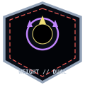

Recalculate
Every tear changes the route because tear-built structures become part of the memorial landscape.

슬픔의 거인

Weight — Black“It does not need a cell. It needs a road that does not put more people beneath its feet.”
Every tear changes the route because tear-built structures become part of the memorial landscape.
Remove crowds, equipment, and barriers before the ninety-second obstruction threshold.
No tear structure is demolished in line of sight without Archive survey and route approval.
Viderehan maps from distance; route-certified Ferrehan personnel provide a still point the Colossus can step around.
The Grieving Colossus is a thirty-meter humanoid formed from laborers, settlers, and dreamers who died building Zone D without names, family notice, or mourning. It does not ordinarily attack and cannot be placed in a conventional cell. The Directorate manages paths, permits, evacuations, memorial access, and tear-built structures around its slow migration. A battle begins when a route fails and the entity is forced to place more people beneath the weight it tries to avoid.
Its body is warm, dark, and impossibly dense: half flesh, half stone, with inward pulses like a thousand slow hearts. Tears fall continuously and crystallize into black pools or stable Han architecture. Each step cracks the earth and leaves a crater, yet the Colossus deliberately avoids occupied buildings and people. Witnesses hear its footsteps as heartbeats rather than impacts.
Zone D construction treated worker deaths as schedule cost. A mason was buried beneath the next morning’s foundation; a carrier who collapsed was left at the edge of the site; names and families were omitted so work could continue. Unmourned deaths accumulated in the soil until their combined Weight split the ground and rose as a single body. The Colossus is the city’s only memorial for people the city never counted.
Pauses in recognition and may offer a tear that crystallizes into a rare Echo.
Usually ignores minor aggression, but force is prohibited as a control method.
Permits distant route mapping; tears contain records of the dead.
Steps around a still, route-certified worker when a path remains available.
Suggested operational values for field simulation and balancing, drawn from the R.D. operational record for C-Vδ-002. These parameters support structured play without replacing the canonical SECC classification.
| Statistic | Value |
|---|---|
| Risk tier | Critical (δ) |
| Entity role | Subject |
| Primary pressure | Han / burden pressure |
| Starting Sorrow Gauge | 60–80% |
| Han-Energy yield | 20–28 Han-Energy per successful work cycle |
| Work difficulty | Severe · R.D. Observation Level 2 — Basic |
| Activation threshold | 1 |
| Tool / M.A.W. grade | — · δ (Critical) |
| Vessel-Destructible | Yes |
| Han Dust Drop (Vessel Destruction) | ~1–10 tons (δ) |
| Recommended response | Reduce Gauge through the listed valid Work Types; Object/Place entities use Viderehan and Ferrehan only. |
Slow Steps pressure spreads sixty meters ahead.
The Colossus stops and emits Weight of Grief.
Open Hand becomes available against the obstruction.
Collapsing Mass settles the entire body into one point.
Mountain of Sorrow can establish a three-turn pressure field.
Recorded combat moves from the R.D. field parameters — normalized values for encounter reference.
| Action | Category | Damage | Trigger |
|---|---|---|---|
| The Weight of Grief | Debuff | 10 Black DMG | When the target enters the Colossus's shadow. |
| The Slow Steps | Debuff | 10 Black DMG | When the Colossus closes the distance. |
| The Open Hand | Attack | 14-22 Black DMG | When the target is within reach. |
| The Collapsing Mass | Attack | 24-36 Black DMG | When the Colossus is hurt or cornered. |
| The Mountain of Sorrow | Ultimate | 12-20 Black DMG (AoE, x3 turns) | When the Sorrow Gauge reaches 65%. |
| Phase | Record |
|---|---|
| Tension | Personnel identify the subject manifestation, assess the Weight pressure, select valid Work Types, and establish a safe position. |
| Clash | The team performs Work Types and uses M.A.W. equipment while the entity follows its recorded combat actions. Sorrow Gauge changes determine escalation. |
| Resolution | The team achieves containment, management, retreat, or the documented suppression condition: Cannot be stopped. It can only be guided by monitoring its path and clearing safe routes. |
A thirty-meter figure emerged after a Zone D foundation crack and was first mistaken for structural collapse.
It avoids active homes and people where a route exists; dangerous steps are not deliberate attacks.
Each tear structure corresponds to an unmourned worker or lost construction record.
Authorized tear extraction does not reveal a Sovereign’s full interior.
The archive cannot call the entity mastered until the dead can be named without using the Colossus as their only memorial.
Progressive declassified records. Each entry unlocks at a higher Observation Level.
Grieving Colossus (C-Vδ-002 [WS]) is logged as a Subject-Body manifestation expressing Weight (Black). The Colossus formed from the unmourned dead of early Zone D—workers, settlers, and dreamers who died without anyone to remember them. Held at Zone D — wanders freely; uncontained landmark. The Colossus is a permanent feature of Zone D rather than a conventional breach risk.
Slow migration through Zone D; the R.D. tracks and redirects construction around its path. Tears expand Zone D and create new structures; witnesses experience involuntary mourning. Buildings formed from its tears are beautiful, stable, and emotionally heavy.
The immense loneliness of the forgotten dead.
Management: Cannot be stopped. It can only be guided by monitoring its path and clearing safe routes. Personnel near it report increased empathy and reduced detachment.
Containment records trace the crystallization to this location — the sorrow grew patient and specific until it became a presence that cannot be removed, only held.
A choice presented to the observing worker at the climax of contact. One path reveals the entity; the other feeds it.
| Endure it — bear the weight without flinching. | Struggle free — try to throw it off. | The entity responds as its record predicts. The sorrow is borne; Grieving Colossus is fully recorded. | The entity resists the wrong approach and the pressure builds. The gauge climbs and Grieving Colossus withdraws without revelation. | OBSERVATION SUCCESS | OBSERVATION FAIL |


Inside a tear-built structure, a full-set bearer carries a written memorial list and leads an evacuation line. The Colossus recognizes the procession and slows for one route interval. The bearer physically carries the names as Weight until the list is deposited in the Archive.
The Colossus does not seek revenge for the workers merged within it. It walks with such care because its body already contains the consequence of treating people as obstacles and costs. Tear-built districts are beautiful, stable, and emotionally heavy. Destroying one can erase the only surviving structure attached to a lost worker. Managing the Colossus therefore means planning a city around remembrance rather than defeating a moving boss.
“The dead were too many and mourned by no one. The earth cracked and the Colossus rose.”
“I saw it. Immense, lonely, the physical shape of all the grief the city failed to feel.”
“The accumulated loneliness of the forgotten dead, given form.”
“Zone D was built by workers who died unmourned. The Colossus is their only memorial.”
“The earth cracked beneath their ungrieved weight. The cracking gave the forgotten dead a shape.”
| Field | Record |
|---|---|
| Classification | Sorrow Entity — C-Vδ-002 [WS] · City origin · Sovereign (V) coherence · Critical (δ) potency · Weight (Black) · Subject-Body manifestation |
| Common Name | Grieving Colossus |
| Containment Status | Contained — Zone D |
| Observation Level | 4 — Mastered |
| Threat Assessment | Moderate. The Colossus is immense and lonely. It does not attack. Its mass causes structural stress. Effect: proximity induces the loneliness of the forgotten dead. |
| Containment & Handling Procedures |
|
| Observation Notes |
|
| Cross-References | Zone D · The Maw · The Cheongula · The Weight of Years |
| Faction Involvement | SED (D-territory exploration) · UCD (Fray-adjacent zone) · Judexhan (δ-grade high-threat) |
| Originator | Laborers who died building Zone D, unmourned. ### Registry Addendum |
| Operational interpretation | The classification above is the frame; this record is the picture. Neither is complete without the other, and neither replaces direct observation.. The entity’s behavior, Work Type response, activation or breach condition, M.A.W. risk, and interaction pattern must be read together. Do not normalize anomalies. If behavior deviates from this file, the deviation is the most important data in the room., personnel must preserve the contradiction as evidence rather than silently normalizing it. |
| Review requirement | Containment is not a state; it is a process. After every incident, recheck the gauge, the field, the personnel, and the location. What was true yesterday may not be true today., personnel exposure, and location after every breach, expansion, transformation attempt, or unusual interaction. The R.D. record describes a living sorrow pattern, not a permanently complete explanation. |
Operational interpretation: The classification above is the frame; this record is the picture. Neither is complete without the other, and neither replaces direct observation.. The entity’s behavior, Work Type response, activation or breach condition, M.A.W. risk, and interaction pattern must be read together. Do not normalize anomalies. If behavior deviates from this file, the deviation is the most important data in the room., personnel must preserve the contradiction as evidence rather than silently normalizing it. Review requirement: Containment is not a state; it is a process. After every incident, recheck the gauge, the field, the personnel, and the location. What was true yesterday may not be true today., personnel exposure, and location after every breach, expansion, transformation attempt, or unusual interaction. The R.D. record describes a living sorrow pattern, not a permanently complete explanation.
| Related record | Observed relationship |
|---|---|
| The Orphaned Bell | Stops to listen when the Bell tolls. |
| The Smothering Mother | Recognizes a related grief and reaches toward it. |
| The Forgotten Soldier | Salutes the dead carried by the Colossus. |
| The Kind Healer | Cannot heal what is not a wound in one body. |